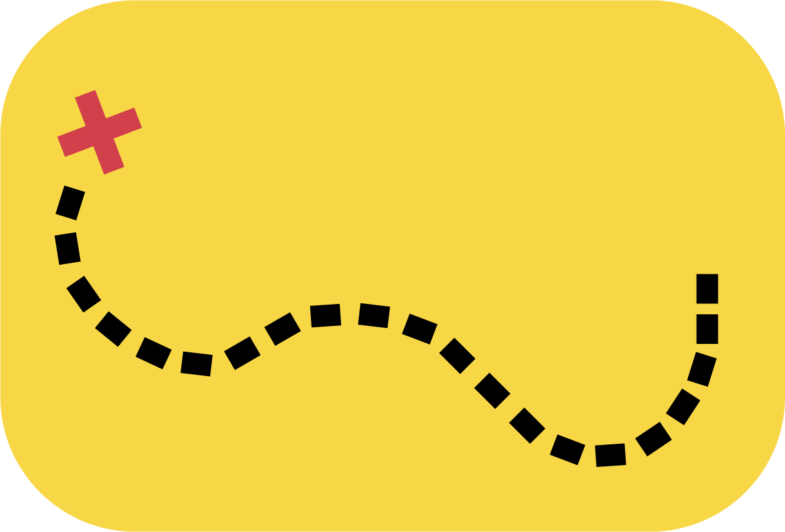

<ion-content no-padding>

  <header>
    <div id="logo">
      
     </div>

     <div id="icon">
     <a href="" target="_true">
       
     </a>
     </div>
  </header>

  <ion-slides pager>
    <ion-slide style="padding-right: 30%; background-position: center; background-image:url(../../assets/imgs/tirpitzbunker.png) ; background-color: #000000">
      <h1></h1>
      <p></p>
    </ion-slide>
    <ion-slide style="padding-right: 30%; background-position: center; background-image: url(../../assets/imgs/betonslider.png); background-color: #000000">
      <h1> </h1>
      <p></p>
    </ion-slide>
    <ion-slide style="padding-right: 30%; background-position: center; background-image: url(../../assets/imgs/tirpitzrav.png); background-color: #000000">
      <h1></h1>
      <p></p>
    </ion-slide>
    <ion-slide style="padding-right: 30%; background-position: center; background-image: url(../../assets/imgs/vestkystslide.png); background-color: #000000">
      <h1></h1>
      <p></p>
    </ion-slide>
  </ion-slides>

  <footer>
    <ion-col id="instagram">
      <a id="socialboks" href="https://www.instagram.com/tirpitzmuseum/" target="_blank">
        <ion-icon name="logo-instagram"></ion-icon>
      </a>
    </ion-col>
    <ion-col id="facebook">
      <a id="socialboks" href="https://www.facebook.com/Tirpitzmuseum/" target="_blank">
        <ion-icon name="logo-facebook"></ion-icon>
      </a>
    </ion-col>
    <ion-col id="web">
      <a id="socialboks" href="https://vardemuseerne.dk/museum/tirpitz/" target="_blank">
        <ion-icon name="md-globe"></ion-icon>
      </a>
    </ion-col>
  </footer>
</ion-content>

